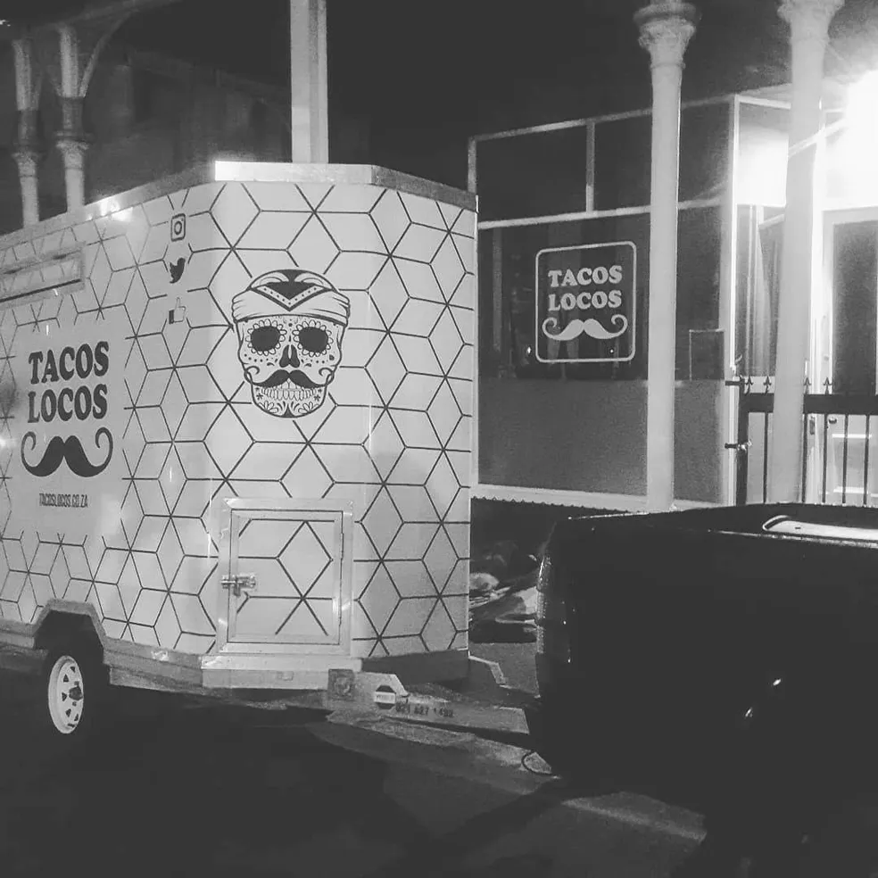

Welcome to Tacos Locos!
Established in 2015, Tacos Locos is a Mexican-style street food business based in Cape Town.
What would you like to order?

We offer a variety of delicious tacos, burritos,
and other Mexican-inspired dishes made with the freshest ingredients.